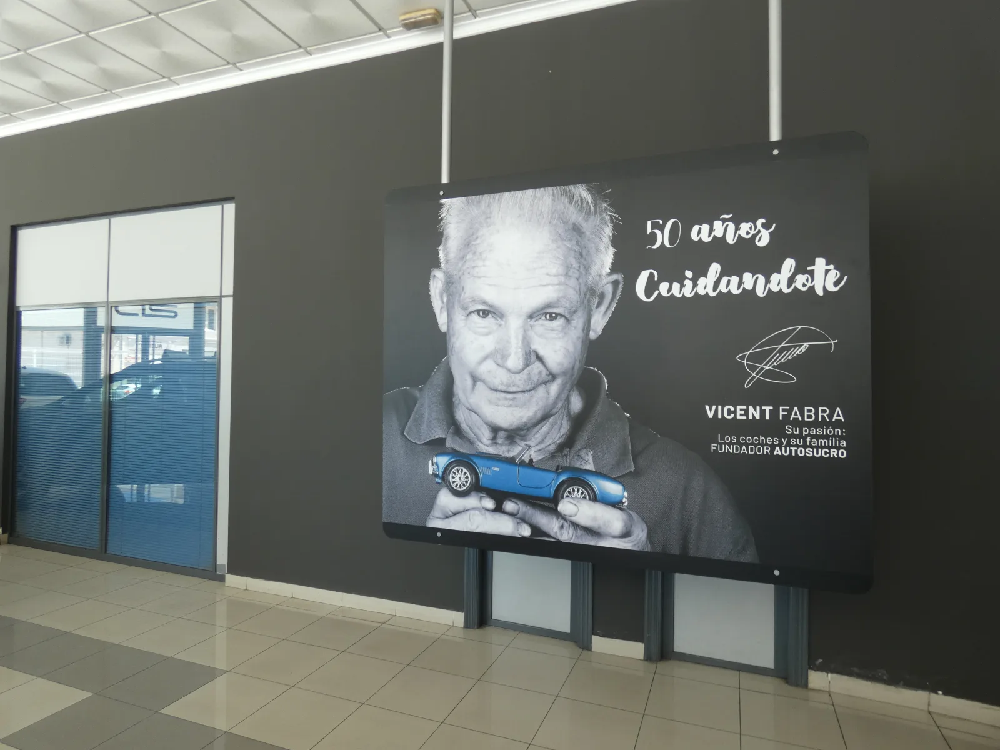
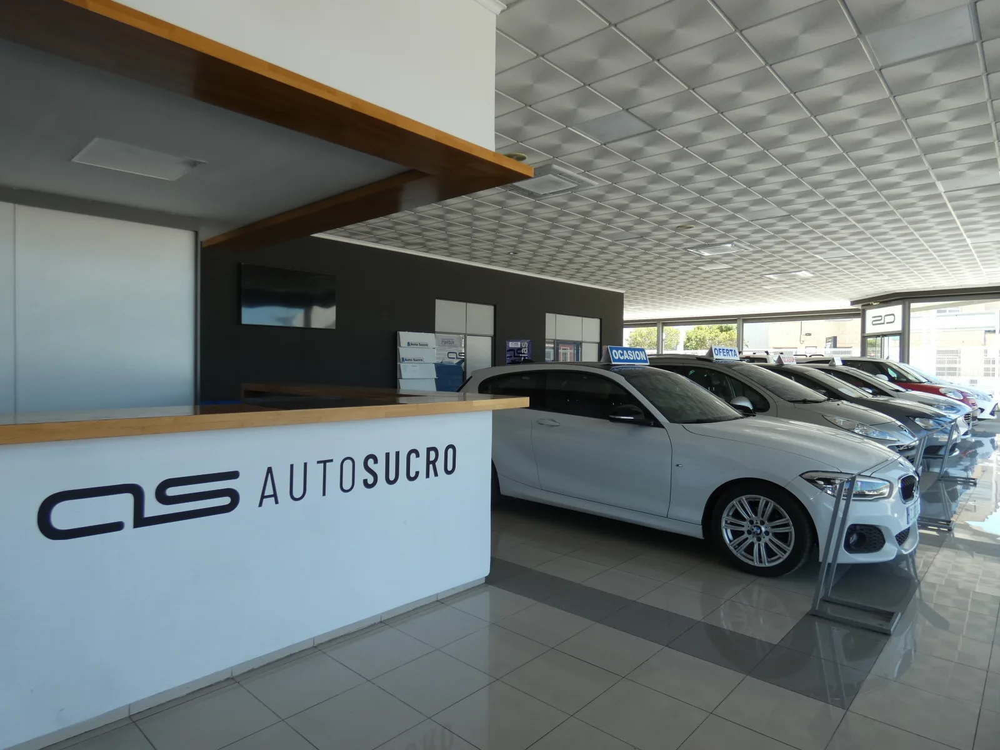
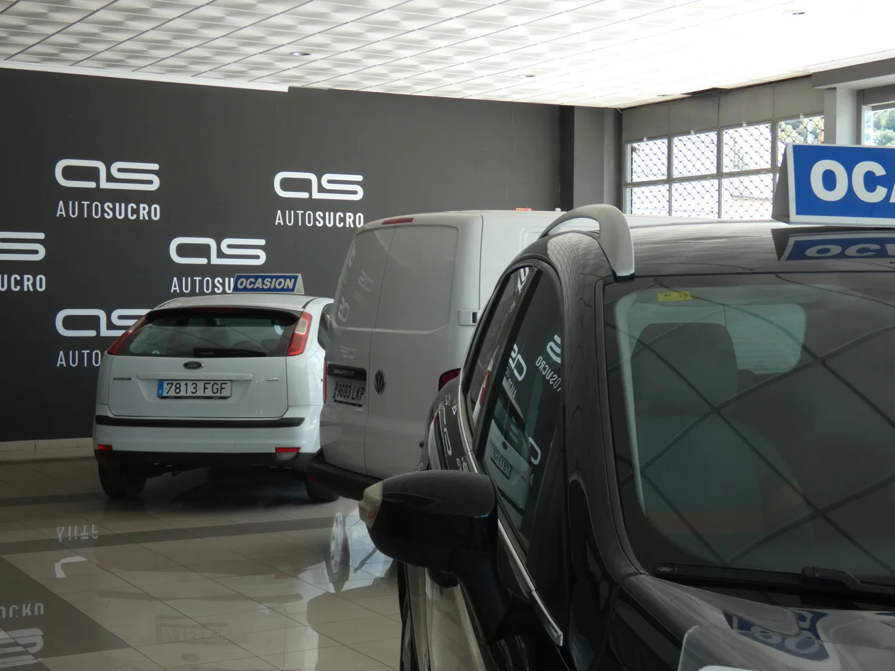
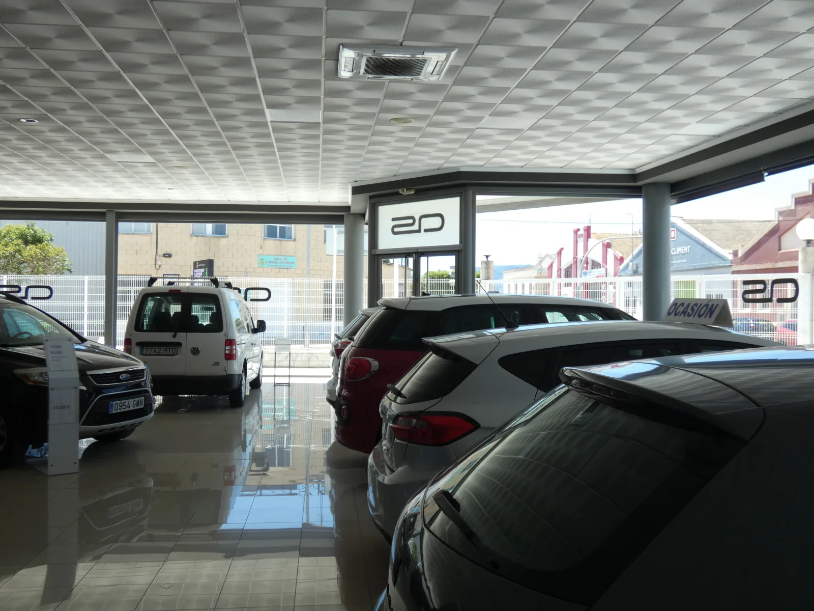
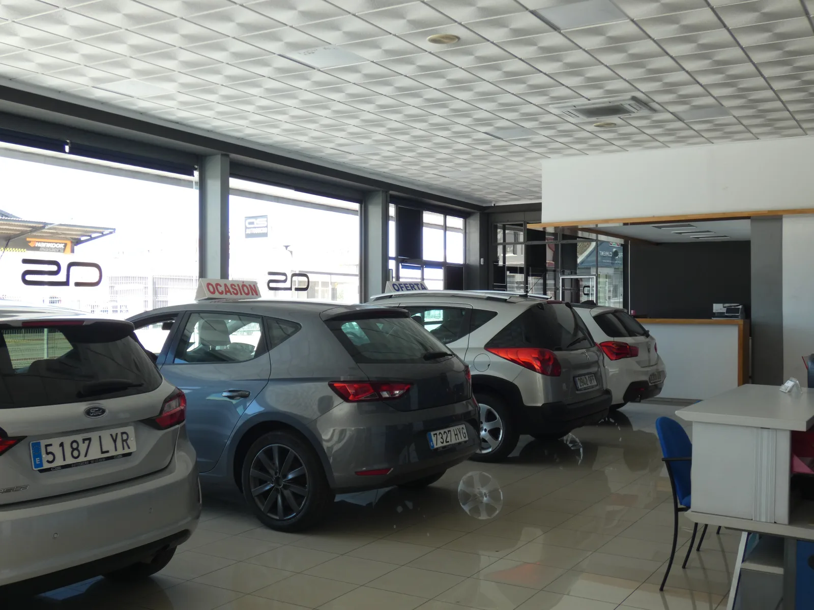
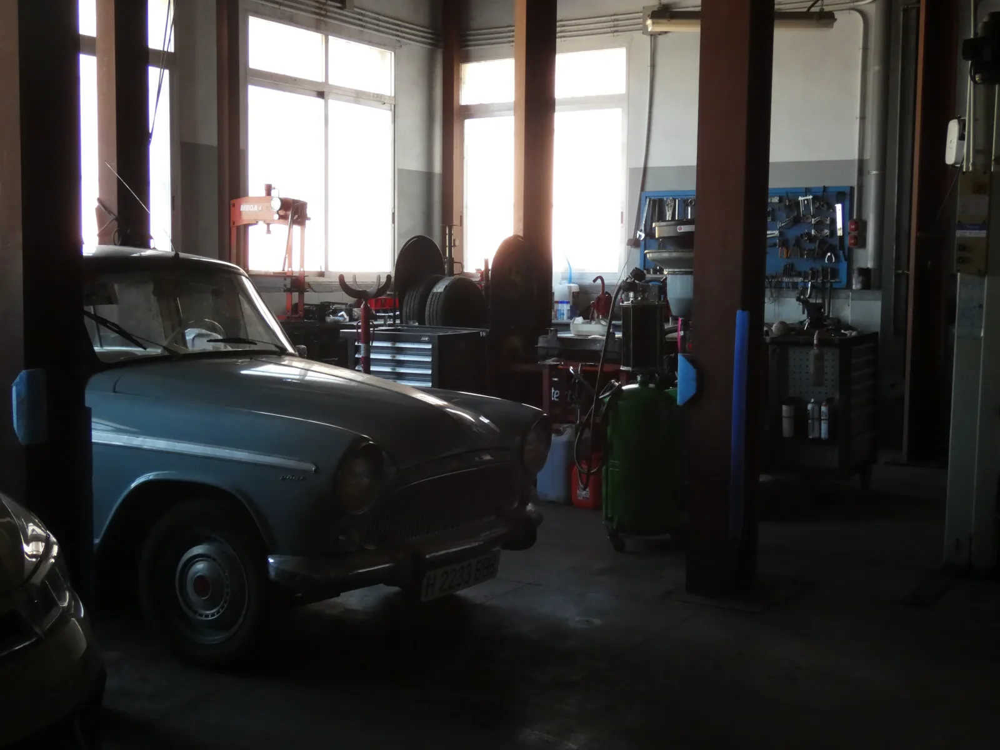
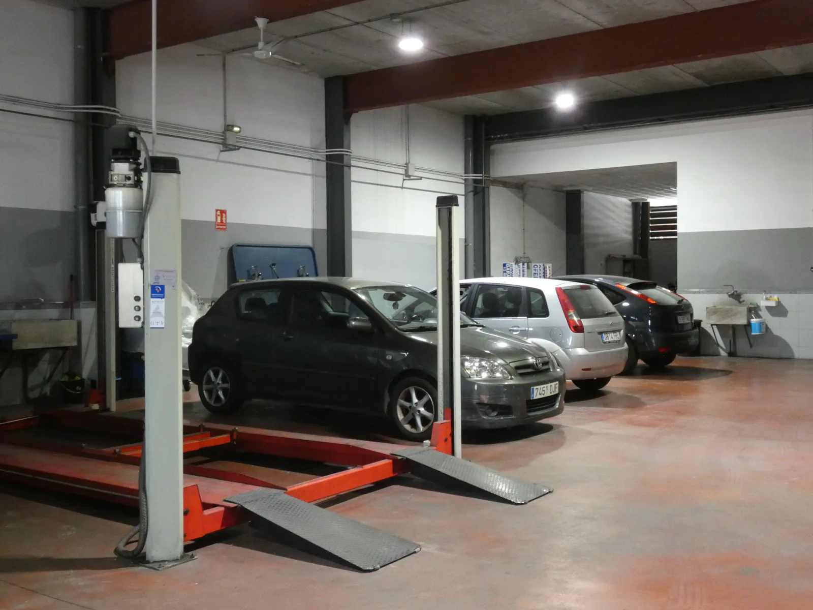

Empresa familiar desde 1979
Nuestra historia
Autosucro nació en 1979 como un proyecto familiar con una misión clara: ofrecer vehículos de confianza y un servicio de taller de primera calidad en Cullera, Valencia.
A lo largo de más de cuatro décadas hemos crecido hasta convertirnos en un referente del sector, con 2.000 m² de instalaciones modernas y un equipo humano comprometido con la excelencia.
Somos concesionario multimarca líder en ventas a nivel nacional, pero nunca hemos perdido los valores de empresa familiar que nos definen: cercanía, honestidad y compromiso real con el cliente.



Lo que nos define
Honestidad
Transparencia en cada operación, sin letra pequeña
Cercanía
Trato personalizado. Somos personas atendiendo personas
Compromiso
Nuestra palabra vale. Cumplimos lo que prometemos
Excelencia
Buscamos la máxima calidad en todo lo que hacemos
Trayectoria
1979
Fundación de Autosucro
La familia Sucro abre las puertas de Autosucro en Cullera con una visión clara: honestidad, servicio y vehículos de calidad.
1990
Ampliación del taller
Incorporamos taller propio de mecánica, chapa y pintura, convirtiéndonos en un servicio integral de automoción.
2005
Nuevas instalaciones
Inauguramos las actuales instalaciones de 2.000 m² en Cullera con exposición, taller y zonas de recepción de última generación.
2015
Expansión multimarca
Consolidamos nuestra posición como concesionario multimarca líder en ventas a nivel nacional.
Hoy
Más de 45 años cuidándote
Seguimos siendo la misma empresa familiar de siempre, con los mejores medios técnicos y el mismo compromiso con nuestros clientes.




Visítanos
Estamos en Carrer Sueca, 32 — Cullera (Valencia). Te esperamos de lunes a sábado.